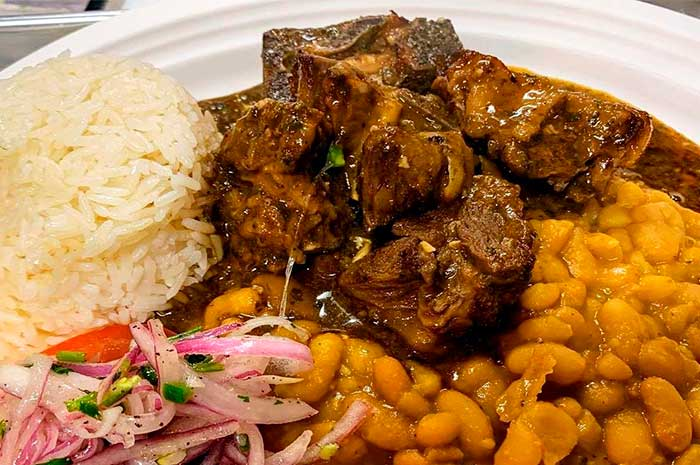

¿Cómo hacer el cabrito a la norteña?
Ingredientes:
- 1 kg cabrito parte de brazuelo (cadera)
- 1 cebolla
- 1 taza chicha de jora
- al gusto Culantro licuado
- 1 cucharada ají especial
- 1 cucharadita ajos
- 1/2 cucharadita cominos
- 1/2 cucharadita pimienta
- Aceite
- al gusto Sal
Instrucciones:
Pasos:
- Para el cabrito a la norteña podemos aderezar la carne una noche anterior (esto hará que los ingredientes se impregne mejor) lavamos bien la carne ya cortada en trozos y la ponemos en un bol, agregamos el culantro, el ají especial, cominos, pimienta, una taza de chicha de jora, sal al gusto. Todo lo mezclamos y dejamos reposar hasta el día siguiente.
- En una olla agregamos aceite a temperatura baja para freír la cebolla cortada en cuadros muy pequeños con el ajo, dejamos que la cebolla se fría (que tome un color medio marrón o caramelo), echamos la carne que aderezamos la noche anterior con todo el aderezo y dejamos que todo se fría bien. Luego agregamos una taza y media de agua hervida dejando cocinar a fuego lento por el tiempo de una hora y cuarenta minutos aproximadamente.
- Siempre estando al tanto de que nuestra preparación no se quede sin líquido (podemos tener una jarrita con agua agregamos de a poco solo lo necesario) por el tiempo que estará en cocción para que la carne nos quede suave. Revisar que nuestra carne ya este suave rectificamos sazón. Retiramos del fuego. Servir acompañado de unos ricos fríjole, yucas sancochadas, salsa criolla y su arroz blanco que hace una perfecta combinación con el jugo de nuestro cabrito a la norteña, es imposible no repetir.